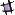

In most of the previous lectures, we assume that the neural network has inputs xi and output yj computed from the inputs. The basic equation for the output is
yj = f( Si wjixi) (1)
This clear distinction of inputs/outputs is convenient and useful. However, there are situations that is also useful to consider a autonomous system without external inputs. Hopfield's network is one such example. In Hopfield's network model, we identify the output yj is the same variable xj. So the above equation now becomes
xj = f( Si wjixi)
This equation can be used either synchronously or asynchronously. For easy analysis and good analog with physical systems in statistical physics, we shall consider asynchronous updating only. In this case, we pick a neuron j at random (or in some ordered fashion), then apply the above updating method to get the new value the neuron j. This is normally done until a fixed point is reached, or some other convergence criterion is satisfied.
The Hopfield's model is a McCulloch-Pitts type model in the sense that the value x takes only discrete values. Instead of using n = 0 and 1, it is convenient and natural to use x = -1 and 1. Such a variable is called a (classical) spin, in analogy with magnetic property of an atom. Clearly, they are related linearly by x = 2n-1. The nonlinear transformation function will be a sign function sgn(u), h(u) = -1 for u < 0 and 1 for u >= 0. In addition, we assume that w is symmetric. That is
wij = wji
This requirement is important for some theoretical consideration. In particular, it guarantees the existence of an energy function. Biology of the brain does not support is assumption. So some say that this symmetry assumption is one step backward from biology. However, the Hopfield's model has interesting properties and can be used as a "content-addressable" memory.
One of the most important contribution of the Hopfield's work [1982] was to introduce the concept of an energy function into neural network theory. For the model above, the energy function is
E = - (1/2) Sij wij xi xj = - (1/2) x W xT
where x = -1 or +1, wij = wji is the synaptic strength, the summation is over all possible ordered pair (ij). For each configuration {x}, there is an energy associated with it. Some has higher energy, others has a lower energy. The central property of an energy function is that it always decreases at least remain constant as the system evolves according to its dynamic rule. This means that the system evolves into a minimum in energy on the energy "landscape". The minimum need not to be absolute minimum; the system can develop into a local minimum. The energy function of this form is known as (mean-field) Ising model.
Let us show that the dynamics indeed reduces energy or at least non-increasing. Let the energy in state x be E and that after change be E'. The value at site k is
x'k = sgn( Si wkixi) (summation excludes i = k) (2)
If x'k = xk, the state has no change, thus the energy is the same. If x'k not equal xk, we must have x'k = - xk. Let compute the energy difference between the two configurations
E' - E = - (1/2) Sij wij x'i x'j + (1/2) Sij wij xi xj
We note that the primed variables are the same as for the unprimed ones, x'i = xi, except for i = k. In this case, x'k = - xk. Thus the (ij) terms not involving k cancel exactly. The terms involving k are
E' - E = ( - Si wki x'k xi - Si wik xi x'k - wkk x'k x'k + Si wki xk xi + Si wik xi xk + wkk xk xk)/2
Since wik = wki, and xk*xk = x'k*x'k = 1, we have
E' - E = - 2 x'k (Si wki xi)
Since the sign of x'k is the same as the sum, the term x'k * (Si wki xi) is always position, and thus E' < E. Combined with the case of x'k = xk, we always have E' <= E.
The self-coupling terms wkk may actually be omitted altogether, both from the dynamical rule (as we did) and in the energy function.
The main use of Hopfield's model is as a sort of memory. Unlike conventional computer memory, our brain remember things even if some fractional neurons die. The information is stored nonlocally. We recall the memory by associate and some fragment of the events. The Hopfield's model has some similarity to the biological brain. In the Hopfield model, the memory is stored in the synaptic strength w. Consider storing only one pattern in the network. This pattern is the output (state) of running the dynamics such that it reaches a fixed point:
sgn(Sj wij xj) = xi (for all i)
What choice of w has this property? It is easy to see that this is true if we take
wij = const xi xj
For later convenience we take const 1/N, where N is the number of neurons. Such a choice is also robust. Even if part of starting values are wrong, since the sign of the sum is dominated by majority of the variables, the system will quick relax to its attractor. We also note that this is essentially a Hebbian learn rule, as the strength is proportional to the activities of two neurons connecting the two.
To store many patterns, we simply add each pattern to the matrix W
W <- W + xT x/N
Or equivalently for p patterns
wij = (1/N) Spu=1 xui xuj
Here, there is no learning process, the information is put in by "hand".
Some questions to think:
 |
Why a pattern is stable (if at all) against the dynamics in the case with p patterns? |
| What you might think happen if p is sufficiently large? |
Here and in the next Chapter, we introduce the concept of stochastic dynamics. So far the rule of the dynamics, Eq. (1) or similar, above, is deterministic. Its value is know for sure giving the values of all other nodes. A very interesting and instructive idea is introduce noise to the system so that the value taken is to some extent by chance. A Glauber dynamics goes as follows. Pick a neuron (site) i at random as before. hi = Sj wijxj. Set xi = +1 with probability f(hi) and xi = -1 with probability 1-f(hi), where the function f is defined as
f(h) = 1/(1 + exp(-2h/T))
T is a parameter control the noise. If T = infinity, the spin values are totally at random. On the other hand, if T = 0, the dynamics reduces to the previous case given by equation (2) above. This temperature T is not the physical temperature of your brain, but just a formal parameter of the model. The concept of temperature will appear again in the next Chapter on Boltzmann machine.
One reason for introducing a finite-temperature model is that it makes close contact with the theory of statistical mechanics. The machinery developed there can be used for the analysis of the neural network models.
In the Mathematica program we should examples of Hopfield memory storage and retrieval.